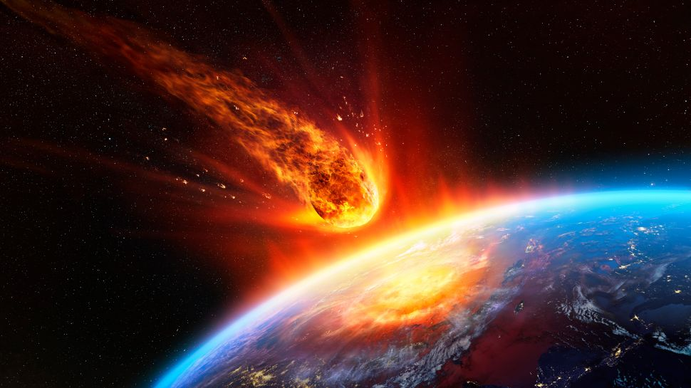
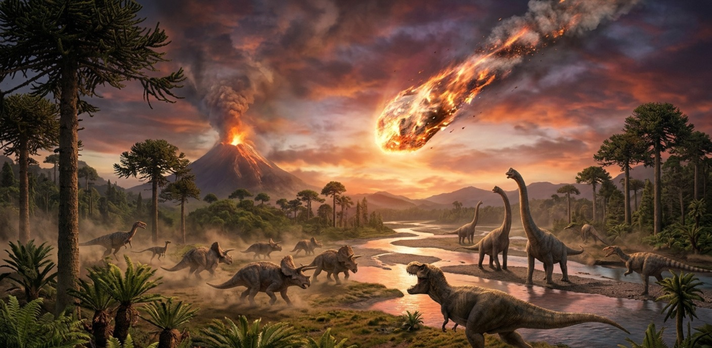
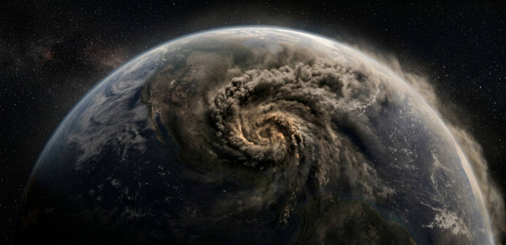

Extinção dos Dinossauros
Esse evento marcou o fim da Era Mesozoica e mudou completamente a história da vida no planeta.
O Fim de uma Era
A extinção dos dinossauros marca o fim de uma das eras mais impressionantes da história da Terra.
Durante milhões de anos, essas criaturas dominaram o planeta, mas desapareceram de forma repentina há cerca de 66 milhões de anos, encerrando a Era Mesozoica. A principal explicação para esse evento é a queda de um enorme asteroide, conhecida como Extinção do Cretáceo-Paleógeno, que provocou uma série de mudanças drásticas no planeta, o impacto liberou uma quantidade gigantesca de energia, causando incêndios, terremotos e levantando uma enorme nuvem de poeira que bloqueou a luz solar por um longo período.
Sem a luz do Sol, as plantas não conseguiram sobreviver, o que afetou diretamente toda a cadeia alimentar. Os dinossauros herbívoros ficaram sem alimento, e os carnívoros sem suas presas, também não resistiram. Além disso, o planeta passou por mudanças climáticas severas, com queda de temperatura e condições extremamente difíceis para a maioria das espécies. Apenas alguns seres vivos mais adaptáveis, como pequenos mamíferos e os ancestrais das aves atuais, conseguiram sobreviver e evoluir ao longo do tempo.
Assim, o fim dos dinossauros não representou apenas uma grande extinção, mas também abriu caminho para o surgimento de novas formas de vida, incluindo os mamíferos, que mais tarde dariam origem aos seres humanos.
O fim dos dinossauros não foi apenas uma extinção, mas o começo de uma nova era na Terra


